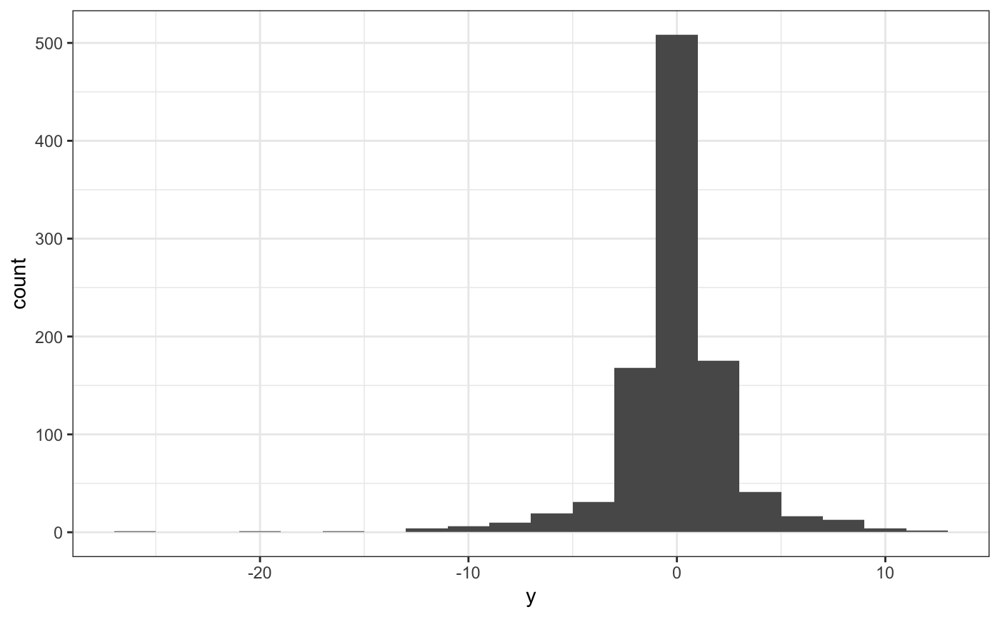
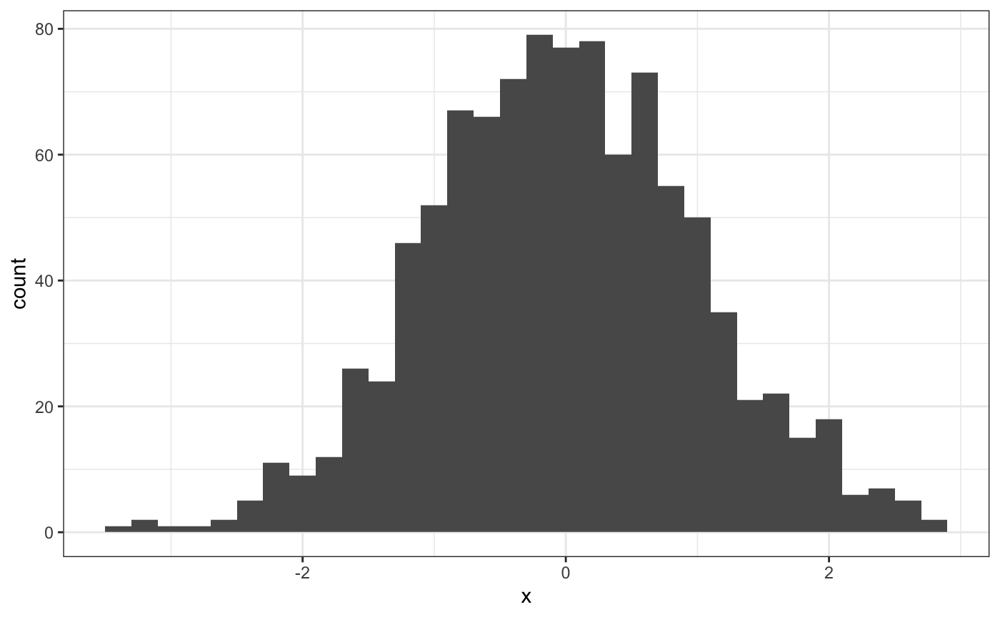

This is a run-down of the functions included in this package. For a more formal description of what each function does, be sure to read their individual information pages.
get_age()
The lubridate package is fantastic and can do a great many things. It makes working with dates so much clearer and easier than base R. It is thorough and dynamic, which in some ways is great, but in others it can be confusing and complicated. Intervals, durations and periods are the three different ways to measure time differences in the lubridate ecosphere, and when you read about how to differentiate them, it all makes sense (leap days and daylight savings time, etc…). However, I don’t want to have to re-read that every time I want to simply calculate someone’s age, and unfortunately lubridate doesn’t include a straight-forward function to do this. Over time, I’ve come up with the get_age() function which does this simply. Word of warning, Leapling birthdays (i.e. people who are born of February 29th) are confusing and are different depending on your jurisdiction. As a leapling, your legal age depends on how the law decides when your birthday is. This function assumes the UK-style where a leapling’s age changes on 1st March. In some places, this happens on 28th February. See here for a bit more info.
get_rate()
A lot of data includes time-based results. Measurements that are taken as a snapshot in time. These don’t always include a rate of change by default, but it can be incredibly useful (and sometimes necessary) to get this. the get_rate() function can calculate a simple rate-of-change by finding the most recent measurement before the current one, and getting the difference (divided by the time between them). It is a simple first order rate-of-change and doesn’t include any complicated modelling, such as time series, etc…
load_packages() & unload_packages()
The standard functions, library() and detach() can be used to load and unload packages. But, as with a lot of built-in functions, there are some limitations. They both only accept a single package at a time, and so I found myself constantly including a line to walk() through all my required packages. The load_packages() function does this for you. The other bit that it does (mostly included when it came to compiling this documentation) is to install packages (from CRAN) that aren’t already installed. There also sometimes a need to remove a package (or more), and so that’s what unload_packages() does.
logit() & unlogit()
The logit() function is used a lot in statistics, and yet there is not a built-in function for it. It exists deep inside the stats package, but is a bit difficult to get to (have you ever used the make.link() function?). So, to make things simpler, I brought it to the surface. The unlogit() function performs it’s inverse.
signed_log() & unsigned_log()
If your data is entirely positive and very dense around zero with a lot of outliers, then you can perform a logarithmic transformation, which will hopefully spread your data out and make it look more Normal. Very useful if you want to do a regression (or a t-test). However, sometimes your data will be clustered around zero and have negative values. A standard logarithmic transform won’t work here, so we need something a bit different. We want to perform a logarithmic transform, whilst also maintaining whether the input was positive or negative. The signed_log() function does just that. The relationship isn’t exactly logarithmic, but the scaling is. The formula for the signed_log() function is:
\[ \textrm{slog}_b(x) = \textrm{sign}(x)\log_b(|x| + 1) \]
The unsigned_log() function will reverse this process:
\[ \textrm{slog}_b^{-1}(x) = \textrm{sign}(x)(b^{|x|} - 1) \]
It can transform this:

into this:

table()
How often have you been running a pipeline and wanted a quick summary of your data? So you decide to put a table() function at the end but then “Oh No! Error!”. You forgot to change the %>% to a %$% to use the exposure pipe. Well, this overloading of the table() function solves that. It checks if the first input is a list (or list-like object, such as a data.frame or tibble) and if it is, it evaluates the base::table() function inside that tibble, otherwise, it just does a plain old base::table(). Versatile to your mistakes.